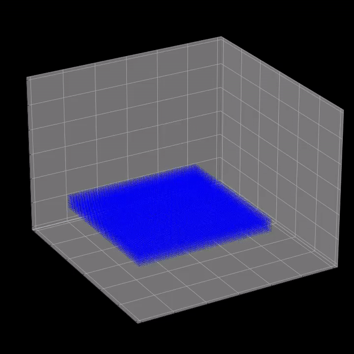

Our main goal with this project was adding diffuse particles to fluid simulations, and our code architecture closely mirrors our fluid simulation architecture.
ParentFluid is a struct which owns all the DiffuseParticle structs in the scene.
ParentFluid also has a pointer to the Fluid for the scene, which allows it to access the positions and velocities of all the Particle structs in the scene.
We implemented this paper to advect and generate diffuse particles.
To determine the number of diffuse particles \(n_d\) that fluid particle \(i\) generates, we calculate \(I_k\), \(I_{ta}\), and \(I_{wc}\), which indicate the potential to generate diffuse particles due to kinetic energy, trapped air, and wave crests, respectively. To ensure that all the potentials are between 0 and 1, we use a clamping function \(\Phi\) which is defined as \[\Phi(I, \tau^{\text{min}}, \tau^{\text{max}}) = \frac{\min(I, \tau^{\max}) - \min(I, \tau^{\min})}{\tau^{\max} - \tau^{\min}}\] where \(\tau^{\min}, \tau^{\max}\) are user-defined parameters.
The potentials are calculated by:
After calculating the potentials, \[n_d = I_k (k_{ta} I_{ta} + k_{wc} I_{wc}) \Delta t\] gives us the number of diffuse particles that fluid particle \(i\) generates. To create the generated diffuse particles, we need two vectors \(\pmb{e}_1'\) and \(\pmb{e}_2'\) which are orthogonal to \(\pmb{v}_i\). To achieve this, we decided to use Gram-Schmidt to get \(\pmb{e}_1'\) by orthogonalizing one of the standard unit basis vectors with \(\pmb{v}_i\), and then taking \(\pmb{e}_2' = \pmb{e}_1' \times \pmb{v}_i\). We then consider a cylinder with radius equal to the radius of the fluid particle (which we always take to be \(1/10\)), height \(\| \Delta t \pmb{v}_i \|\), and base spanned by \(\pmb{e}_1'\) and \(\pmb{e}_2'\). We then place diffuse particles uniformly in that cylinder offset by the fluid particle's position, and we initialize the velocity of the diffuse particle to be \(r \cos \theta \pmb{e}_i' + r \sin \theta \pmb{e}_2' + \pmb{v}_i\), where \(r, \theta\) are the typical cylindrical coordinates.
Finally, for each generated diffuse particle, we classify it as spray if it has less than 6 fluid particle neighbors, bubbles if it has more than 20 fluid particle neighbors, and foam otherwise. If it is foam, we initialize its time to live to be \(n_d\), to model the effect of larger foam clusters being more stable than smaller ones.

|

|
For mesh generation we implemented the marching cubes algorithm. We subdivided the entire object space into a multitude of smaller marching cubes. Then for each marching cube, we take its eight corner points, calculate their isovalues with the iso function and decide if it should render a triangle at an edge connecting to that vertex based on the vertex’s isovalues. Then we generate a OBJ mesh file containing a list of 3D triangle positions and 3D triangle normal values. For our implementation, we also used a subset of code from this website that: provided the list of all 256 different possible triangles we can render, provided a way to generate an index into the triangle list given a passed in cube, and for determining the 3D positions of the triangles.
As part of the mesh generation, we needed to compute the isovalue for each of the voxels (corners of each unit marching cube). Here, we decided to use the density calculation, similar to the one described in fluid-particle generation, to be the isofunction. The isovalue of each voxel is computed by running the isofunction on all the particles within a specific search radius and summing up all the corresponding density.
For making the animation look more visually pleasing, we computed the normals for each triangle and cube vertex. And to calculate the normals for each cube vertice, we had to calculate the normal vector of 3 different planes so we computed the vector that goes through a vertex and its diagonal vertex counterpart as the normal vector. And for the triangle normals we modified the code subset that we used to calculate the triangle positions to calculate the triangle normals, but with the cube vertex normals we previously calculated as the input.

After running the marching cube algorithm, we are able to generate a list of triangle meshes that represent the surface at each frame. In order to input our meshes into our rendering software, we need to turn triangle meshes into an OBJ file. In order to do this, we need to write code that will write our triangle vertices, normals, and face definitions into a .obj file. The code is relatively straightforward, we write the vertices, normal, and face definition line by line into a file.
When we were tuning parameters, we noticed that the denser the particles in our box are the better the resulting mesh. In order to achieve this high density, we need to try to pack a large number of particles in a small box. However, when we try generating a small box we were having issues with the particles blowing up. We decided to resolve this problem by creating a larger box and applying a small constant to the position of the particle to fix them within a smaller space. By doing this, we are not experiencing the blowing-up problem while making the particles denser in our cube.

When we were tuning parameters, we noticed that the denser the particles in our box are the better the resulting mesh. In order to achieve this high density, we need to try to pack a large number of particles in a small box. However, when we try generating a small box we were having issues with the particles blowing up. We decided to resolve this problem by creating a larger box and applying a small constant to the position of the particle to fix them within a smaller space. By doing this, we are not experiencing the blowing-up problem while making the particles denser in our cube.
Another issue that we encountered when performing marching cubes with many cubes is that our program would run out of memory.
To solve this, every 100,000 cubes that we iterate through, we write all the results to files and then clear the vector that stores the triangles.
Finally, at the end, we combine the files into a single .obj file.
To further speed up the program, we store previously calculated isovalues in a map. Since up to 8 cubes can share a single vertex, storing these results allows us to avoid redundant calculations. However, to avoid running out of memory, we throw away results that will no longer be needed.
Even though we tried to speed up our marching cubes algorithm as much as possible, it was still too slow to generate a mesh fine enough for diffuse particles.
We tried using OpenVDB to convert the particles to a mesh, but when that did not work, we decided to output the particle positions with .ply files and use Blender's built-in functionality to generate meshes from points.
The lesson we learned was that tuning parameters is a very important and time consuming process that directly determines the quality of the final output no matter how good the code is. The method we used for tuning parameters for the marching cubes algorithm was trial and error. And the method we used for tuning the particle physics simulation parameters was by using a jupyter notebook script that automated the tuning process, along with inputting the results into matplotlib to visually verify the quality of the output based on our parameters. Both methods of parameter tuning still took longer than we expected.